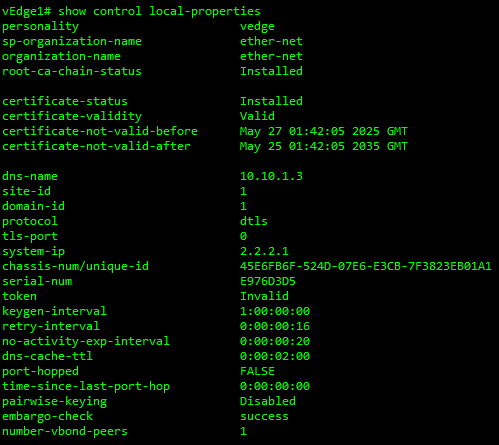
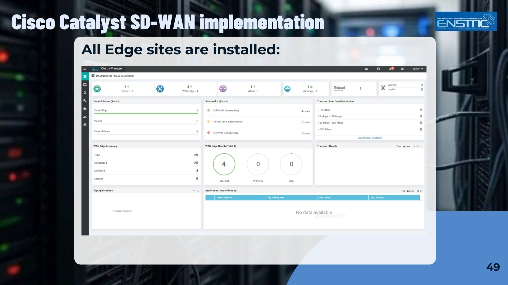
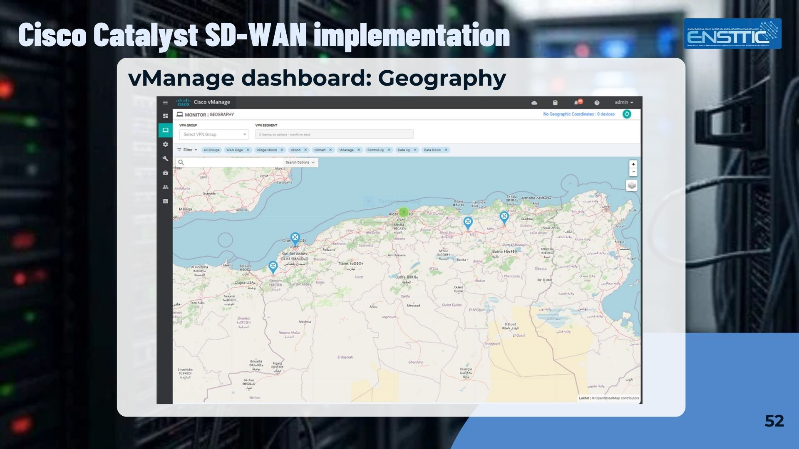
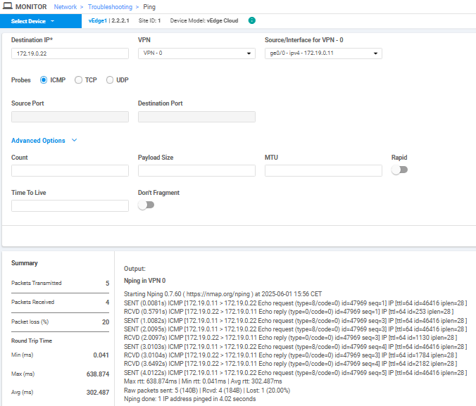

Implementing SD-WAN over Traditional WAN for Enterprises
The project involved building a multi-branch enterprise network connected through an SD-WAN fabric. Using GNS3 and VMware Workstation, virtual routers, controllers, and edge devices were deployed to simulate real-world WAN conditions. The architecture centralized control and automated policy management through the SD-WAN controller.
Traditional WAN networks rely on manual configuration, static routing decisions, and expensive MPLS links. These limitations reduce flexibility, increase operational complexity, and make scaling difficult. The challenge was to design a smarter WAN that dynamically selects paths, improves application performance, and simplifies management while maintaining strong security.
A Cisco SD-WAN solution was implemented using vManage, vBond, and vSmart controllers to provide centralized orchestration. Edge routers were connected via multiple simulated WAN transports. Application-aware routing, centralized policy enforcement, and secure overlay tunnels were configured to optimize traffic flow and improve reliability.
Key Technical Features
- Deployment of Cisco Catalyst SD-WAN controllers (vManage, vBond, vSmart)
- Secure IPsec overlay tunnels across multiple WAN Edges
- Centralized network orchestration and policy management
- Application-aware routing and traffic prioritization
- Simulation of enterprise branch-to-branch connectivity
- Performance comparison between traditional WAN and SD-WAN